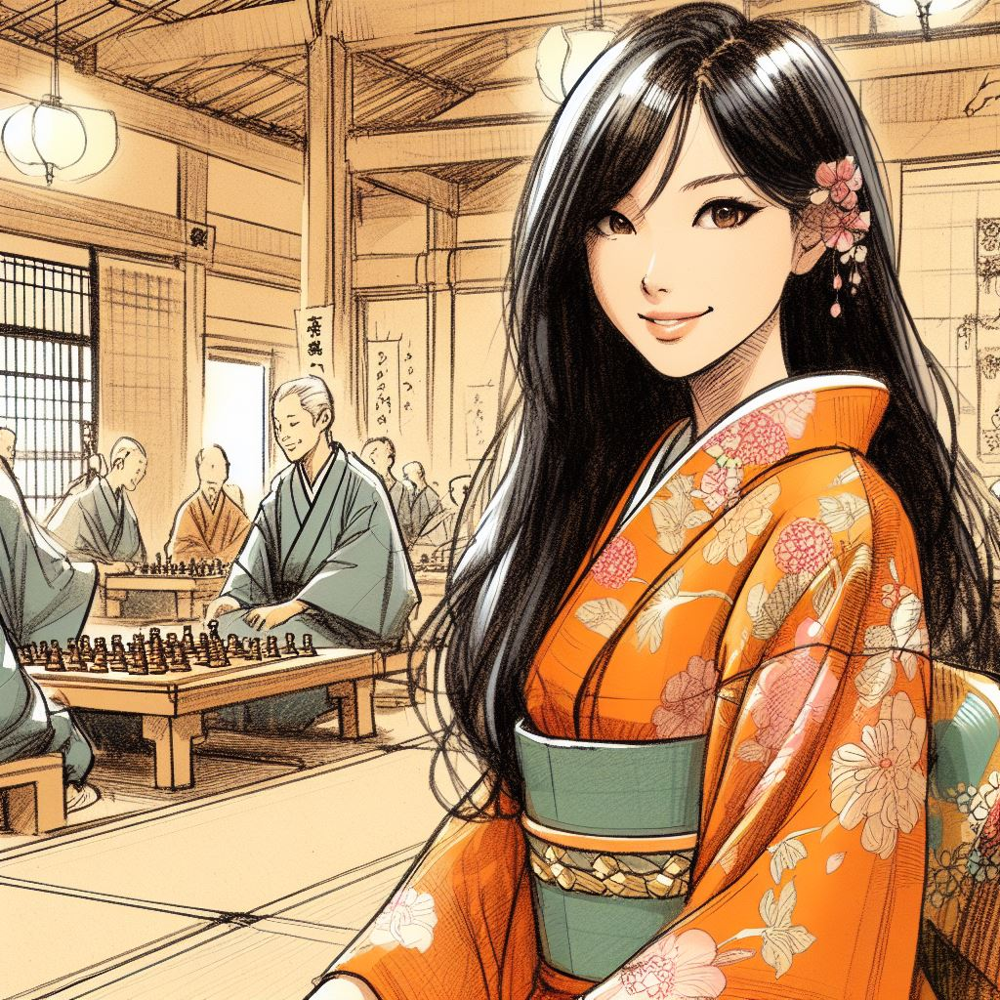
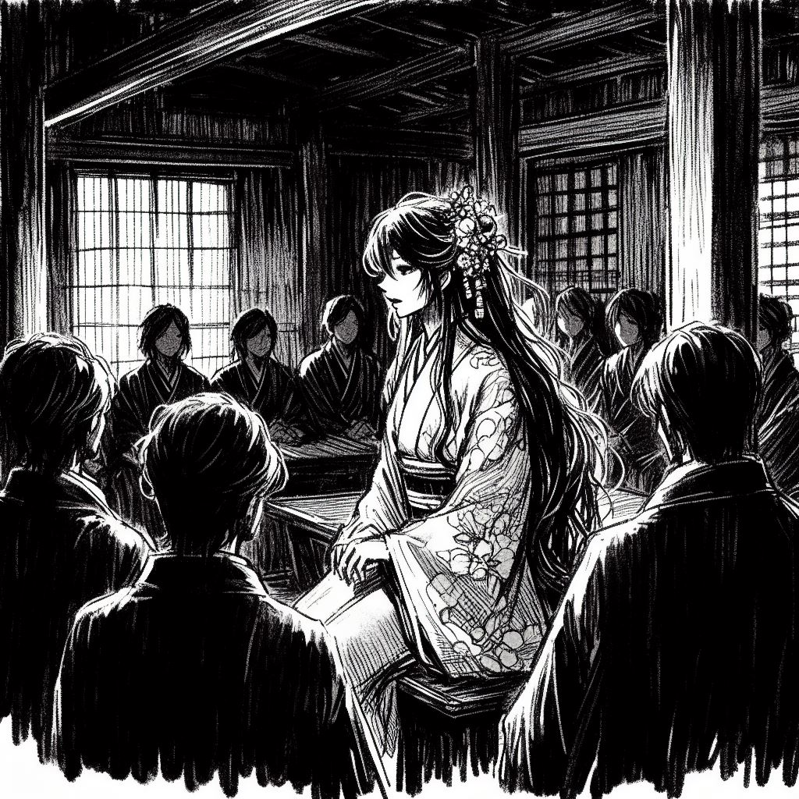
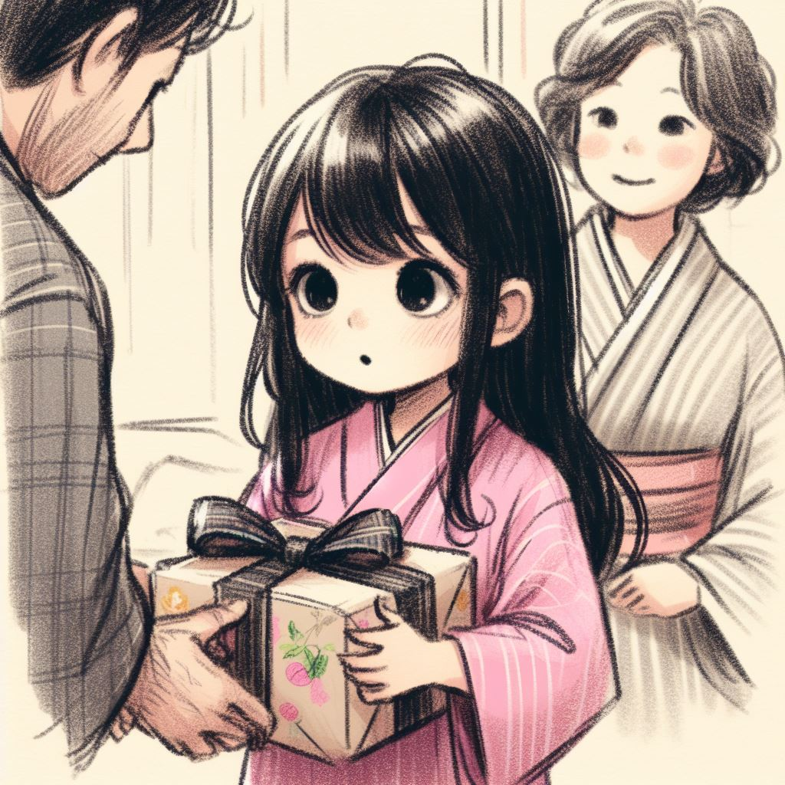
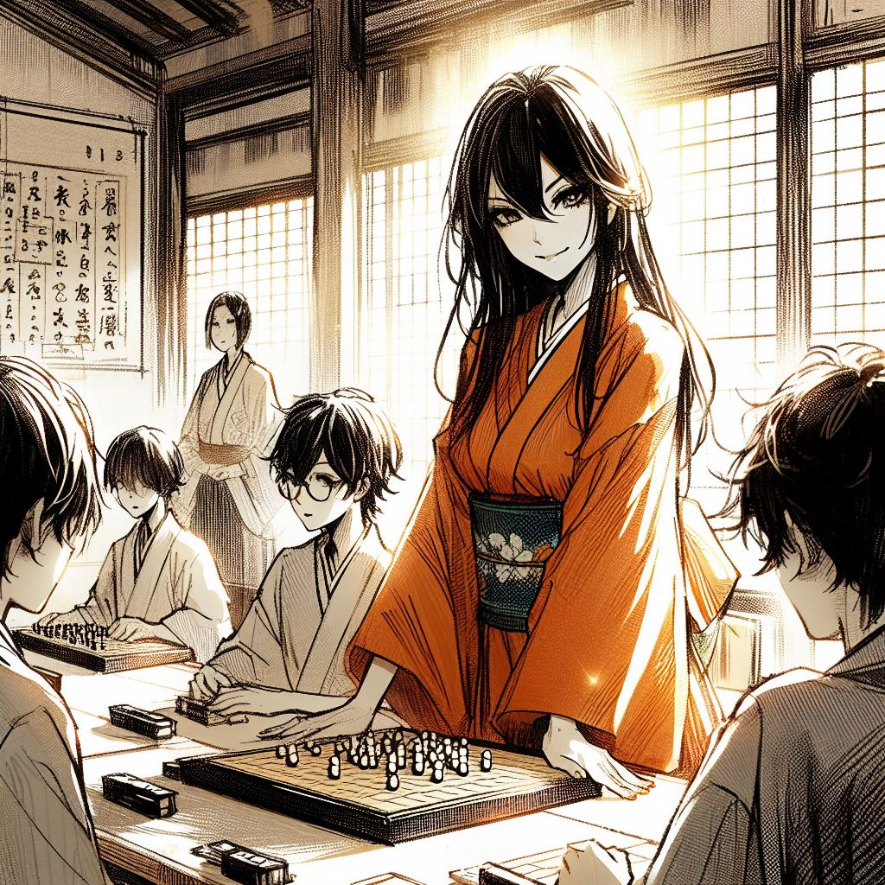
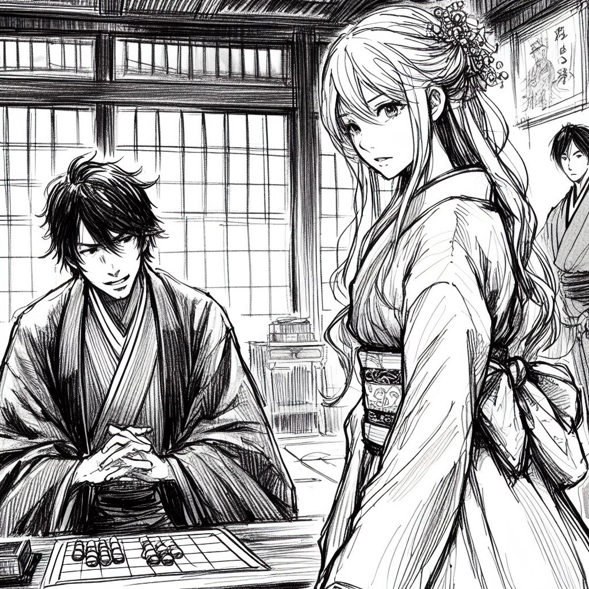
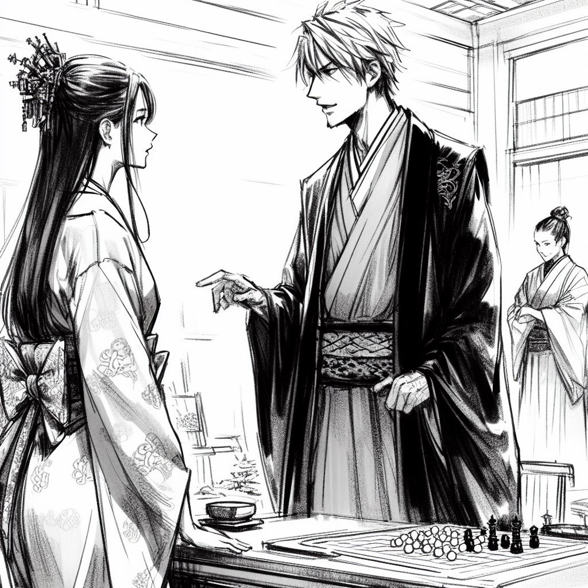
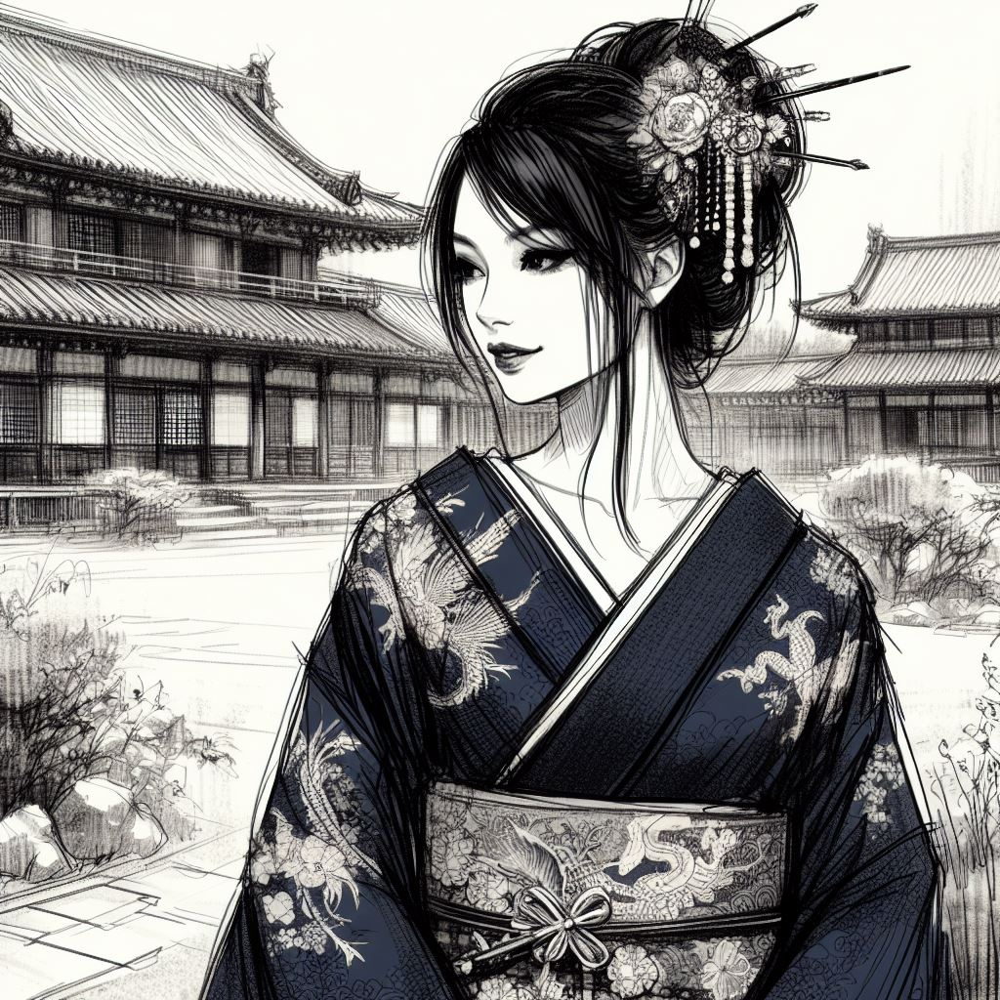
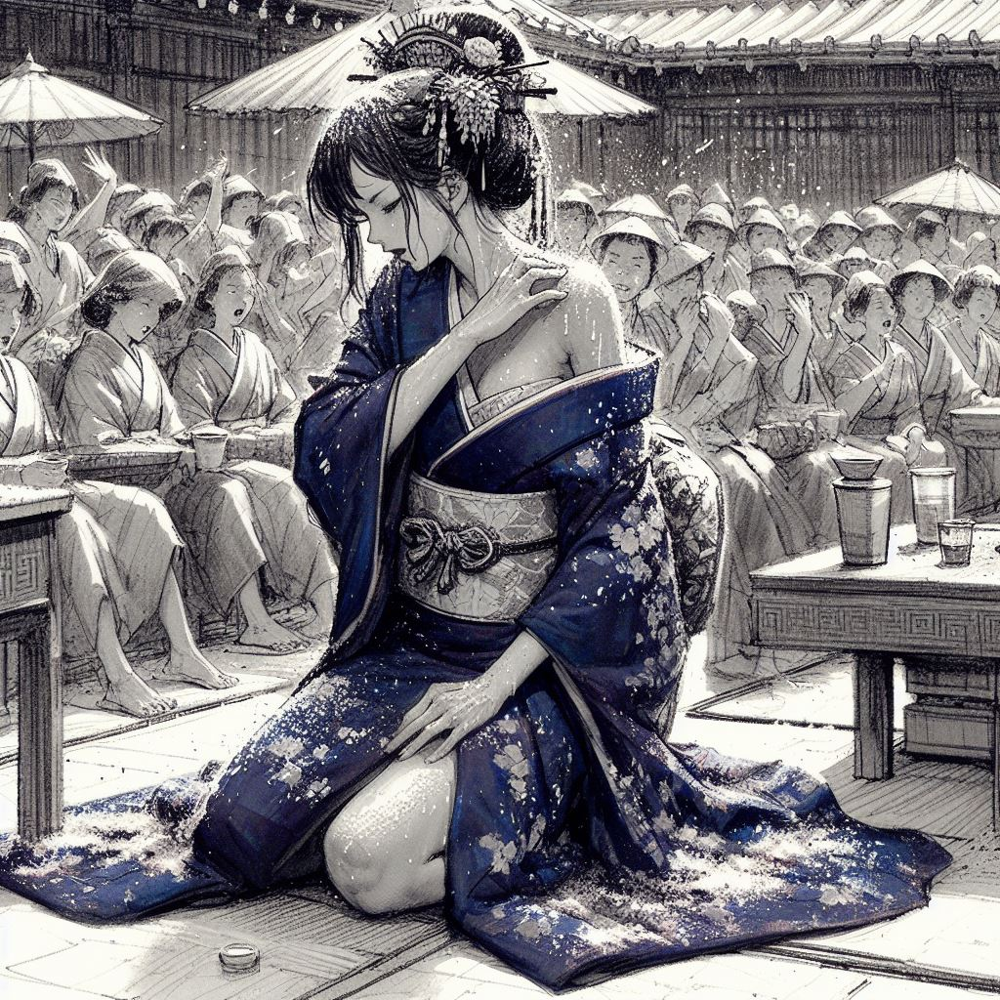
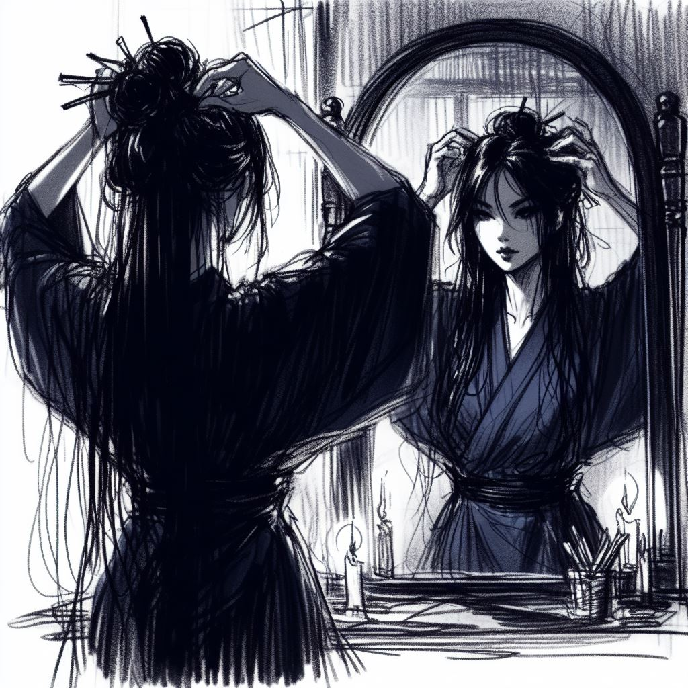
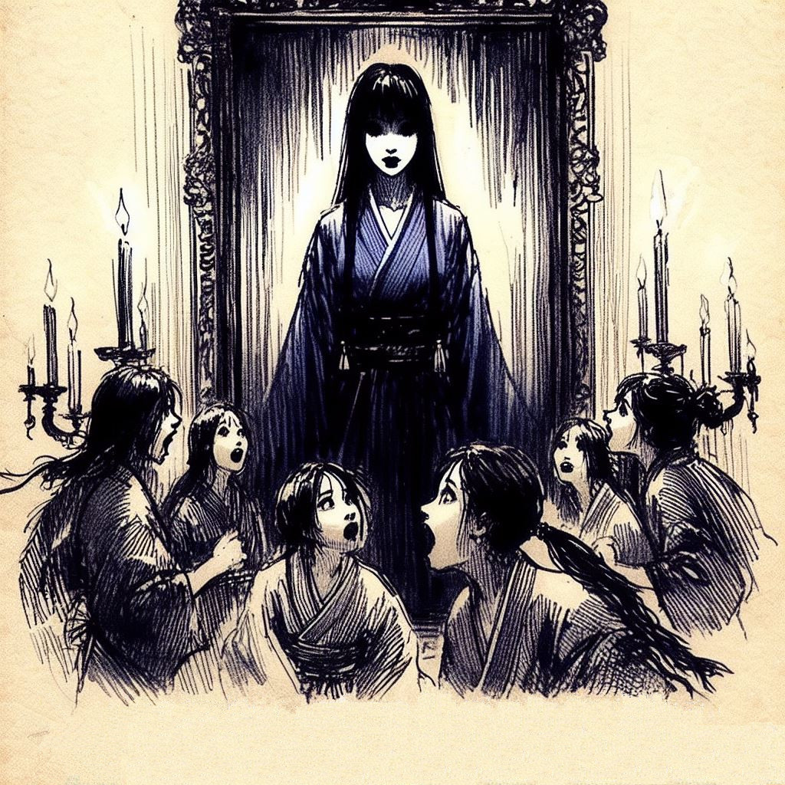

La Genèse de l'Enchanteresse

Sur le Fil de l'Histoire
Dans l'obscurité enveloppante de la pièce, seule une lueur vacillante persiste, défiant la pénombre. Autour d'elle, les visages des auditeurs sont à peine discernables, leurs yeux captivés se tournant vers une silhouette qui se détache lentement du voile d'ombre. C'est une femme, sa présence à la fois discrète et indéniablement forte.

Bonsoir
, commence-t-elle d'une voix douce, presque mélodieuse, flottant dans l'air comme une mélodie légère.
Je m'appelle Mayoko.
Sa voix est un murmure dans la nuit, mais chacun de ses mots est clair, portant une assurance tranquille.
Ce soir, j'aimerais partager avec vous une part de mon histoire. Une histoire qui a façonné l'essence même de mon être.
Alors que le vent gémit doucement à l'extérieur, mêlant ses plaintes à la chute persistante de la pluie, Mayoko prend une pause, laissant son auditoire suspendu à ses lèvres. Elle semble se recueillir un instant, comme pour rassembler ses pensées, puis reprend, sa voix ondulant au rythme de sa respiration.
Ce que je vais vous raconter ce soir
, dit-elle, est plus qu'un simple récit
.
C'est un fragment de mon âme, un moment clé qui a changé ma vie à jamais. Un événement si profond qu'il continue de résonner en moi, jour après jour.
Les auditeurs restent immobiles, leurs cœurs battant à l'unisson avec les mots de Mayoko. Dans l'obscurité, son histoire commence à prendre vie, tissée de mystères et d'émotions profondes, prête à emmener chacun dans un voyage au-delà du réel.
Le Berceau du Ōgi
Mayoko se tient droite, le regard directement ancré dans celui de ses auditeurs, comme si elle cherchait à établir une connexion intime avec chacun d'eux. Une lueur nostalgique illumine ses yeux, trahissant un esprit rêveur, perdu dans les souvenirs d'un temps révolu.
Mon village natal était un petit coin reculé
, commence-t-elle, sa voix teintée de douceur et d'émerveillement.
Enfant unique, j'étais une boule d'énergie, toujours en quête de créativité et de stimulation. Mes parents disaient souvent qu'il fallait sans cesse nourrir mon esprit avide.
Elle marque une légère pause, son sourire s'élargissant légèrement.
Pour mes six ans, mes parents m'ont inscrite à un club de shōgi. Et à huit ans, mon père m'a offert un cadeau très spécial.
Avec un mouvement gracieux, elle ouvre son sac et en sort un objet qui capte immédiatement l'attention de l'assemblée :
un plateau qui évoque un jeu d'échecs, mais avec une aura d'antiquité et de mystère.
Elle le place devant elle avec un soin presque cérémoniel.

C'était un chaturanga, un jeu ancien originaire d'Inde. Ce jeu... il m'a inspirée.
Mayoko s'anime, ses mains se mettant à gesticuler alors qu'elle se remémore ses aventures enfantines.
Avec mes amies, nous aimions mélanger les pièces et les règles du chaturanga avec celles des variantes japonaises du jeu d'échecs. Nous inventions des histoires, donnant vie aux pièces dans des batailles épiques.
Son regard s'illumine de malice.
Nous avons même ajouté une nouvelle pièce, la princesse, que nous placions aux côtés du roi. Notre imagination n'avait pas de limites. Et finalement, nous avons créé notre propre version du jeu, un mélange unique que nous avons appelé ōgi, joué sur un plateau de huit lignes sur huit colonnes.
Chaque mot de Mayoko transporte son auditoire dans un monde de souvenirs d'enfance, de jeux innocents et d'imagination débordante. Son histoire, tout en simplicité, révèle les racines profondes d'une âme créative et passionnée.
L'Ascension de l'Ōgi et l'Invitation Mystérieuse
Mayoko poursuit son récit, sa voix se faisant plus vive, reflétant une période de vie plus animée et dynamique.

Face à l'enthousiasme que suscitait l'ōgi, j'ai commencé à l'enseigner dans mon club d'échecs
, dit-elle, un sourire de fierté éclairant son visage.
Le club s'est rapidement agrandi, attirant de nombreux joueurs passionnés, avides d'apprendre cet art nouveau et fascinant.
Elle fait un geste ample de la main, comme pour embrasser l'ampleur de son récit.
Le jeu a gagné en popularité, non seulement dans mon village mais aussi dans les villages avoisinants. Des écoles dédiées à l'ōgi ont vu le jour, et de nombreux tournois ont commencé à être organisés. C'était une époque excitante, le jeu devenant un phénomène culturel.
Sa voix prend alors un ton plus sérieux, presque solennel.
Mais un jour, alors que j'enseignais, quelque chose d'inattendu s'est produit. La garde royale est venue à moi.
Mayoko marque une pause dramatique, laissant son auditoire suspendu à ses lèvres.
Ils m'ont invitée au château.
Éloges et Remontrances au Palais
Mayoko, avec un regard teinté de réflexion, poursuit son histoire, plongeant ses auditeurs dans une atmosphère de tension et de défis inattendus.
Lorsque je suis arrivée au château, le gokenin, un serviteur de haut rang, m'a accueillie avec chaleur dans une salle d'une beauté somptueuse
, raconte-t-elle.
Il m'a confié qu'il n'y avait pas un jour sans qu'il entende parler de l'ōgi et souhaitait me féliciter personnellement pour la qualité exceptionnelle du jeu.
Mayoko sourit doucement, se remémorant le moment.
Il se déclara lui-même amateur de jeux stratégiques et exprima son désir de contribuer au rayonnement de l'ōgi. Ces mots m'ont remplie de joie et d'optimisme.
Cependant, son sourire s'efface progressivement.
Mais le gokenin aborda ensuite un sujet délicat. Il se demandait si inclure la figure du roi dans un jeu principalement pratiqué par des villageois était approprié. Il souligna aussi que le nom ōgi, signifiant le jeu des rois, pouvait prêter à confusion et devrait être changé.
La scène devient plus intense alors que Mayoko imite le geste autoritaire du gokenin.
Sans me laisser le temps de répondre, il insista sur le fait qu'il était la seule et unique autorité, et que son statut ne devrait jamais être réduit à un simple élément de jeu.
Elle mime le geste du gokenin, écartant d'un revers de la main la pièce symbolisant la princesse.
Il exigea également que je retire la pièce de la princesse, arguant de son absurdité d'être si puissante par rapport aux autres pièces.
Dans la salle, on ressent une tension palpable.
Mayoko, avec une détermination tranquille, continue :
Il n'était pas facile de refuser une telle demande, mais je n'avais aucune intention de modifier le jeu que nous avions créé avec tant d'amour et de passion.

Elle marque une pause, rassemblant ses pensées.
Je m'apprêtais à lui répondre avec tout le tact et le respect que la situation exigeait.
Les auditeurs, captivés, attendent avec impatience la suite de l'histoire, curieux de savoir comment Mayoko a géré cette confrontation délicate et ce que cela signifiait pour l'avenir de l'ōgi.
Rumeurs de Sorcellerie et le Duel du Destin
Mayoko, avec une gravité accrue dans sa voix, continue son récit, plongeant ses auditeurs dans une ambiance empreinte de mystère et de tension.
Le gokenin, sans me laisser le temps de répondre à ses précédentes demandes, exprima soudainement ses inquiétudes concernant des rumeurs de sorcellerie murmurées à mon encontre
, révèle-t-elle, sa voix trahissant un mélange de choc et d'indignation.
C'était la première fois que j'entendais de telles accusations. J'étais tellement stupéfaite que je ne trouvais plus les mots.

Mayoko dépeint l'intimidation du gokenin, sa stature imposante et son regard pénétrant cherchant à la culpabiliser.
Puis, il me questionna directement sur ma capacité à gagner toutes mes parties d'ōgi.
Elle baisse la tête modestement.
Avec humilité, je confirmai, bien que j'étais troublée par le tournant que prenait cette conversation.
Dans la salle, l'atmosphère devient encore plus lourde et oppressante, comme si les murs eux-mêmes se resserraient autour de Mayoko et de son auditoire.
Après un silence interminable, le gokenin proposa alors une solution inattendue : un duel public contre lui-même, sans limite de temps, pour réfuter ces rumeurs et rétablir mon honneur.
Les yeux de Mayoko s'embuent de larmes tandis qu'elle se souvient de sa réaction.
Émue par cette opportunité de laver mon nom, je me suis inclinée profondément en le remerciant.
Sa voix tremble légèrement, traduisant la complexité de ses émotions à ce moment-là.
Dans la salle, l'ambiance se transforme légèrement, passant d'une oppression inquiétante à une lueur d'espoir et de rédemption. Le gokenin, bien qu'intimidant au départ, semble soudainement empreint d'une bienveillance inattendue, offrant à Mayoko une chance de prouver sa valeur et de dissiper les ombres du doute et de la suspicion.
Élégance et Anticipation Avant le Duel
Mayoko, avec une note de solennité dans sa voix, continue de décrire l'un des moments les plus marquants de sa vie.
Un grand duel fut organisé dans la cour du gokenin
, commence-t-elle.
Pour cet événement, le personnel s'est assuré que je sois préparée avec une élégance digne d'une princesse.
Elle ferme les yeux un instant, comme pour mieux se remémorer les détails.
J'étais vêtue d'un kimono d'un bleu nuit profond, évoquant la mystérieuse essence de la nuit. Le tissu, orné de motifs floraux délicats et de représentations mythologiques telles que des dragons et des phénix, symbolisait à la fois la force et la renaissance.
Elle passe doucement sa main sur son bras, comme pour sentir le tissu imaginaire.
Les motifs, tissés en fil d'or et d'argent, scintillaient subtilement sous la lumière, ajoutant une touche de raffinement.
Son regard s'illumine en parlant de sa coiffure.
Mes cheveux noirs étaient arrangés dans un style simple mais élégant, agrémentés de kanzashi minimalistes qui apportaient une sophistication discrète sans être trop ostentatoires.
Elle touche ses cheveux comme pour rappeler la sensation des ornements.
Et bien sûr, l'obi assorti soulignait ma silhouette avec une grâce naturelle. Mon maquillage, volontairement sobre, mettait en valeur ma beauté naturelle avec juste une touche de couleur sur les joues et les lèvres.

Malgré l'atmosphère festive et les préparatifs fastueux, Mayoko reste ancrée dans son récit, démontrant une force de caractère remarquable.
Bien que je n'eusse aucune idée du niveau du gokenin au jeu d'ōgi, je restais calme, concentrée, et résolument déterminée à lui faire face en jouant à mon meilleur niveau.
L'anticipation est palpable dans la salle alors que les auditeurs imaginent Mayoko, telle une princesse guerrière, s'apprêtant à affronter un adversaire redoutable dans une partie d'ōgi qui s'annonce aussi intense que symbolique.
L'Attente Ardente Avant le Duel
Dans son récit, Mayoko peint un tableau vivant de sa situation lors de ce duel crucial, ses mots évoquant les défis physiques auxquels elle a dû faire face ce matin-là.
Il faisait très chaud
, débute-t-elle, un frisson de malaise passant dans sa voix.
J'étais assise sur l'estrade de la cour, directement sous les rayons ardents du soleil. Obligée de me tenir face à la table de jeu, la chaleur était presque accablante.
Elle se passe une main sur le bras, comme pour rappeler la sensation du tissu sur sa peau.
Le kimono que je portais, bien que magnifique, n'était pas le plus confortable pour une telle occasion. Le tissu intérieur, probablement en chanvre ou en lin, était rugueux et irritait ma peau à chaque mouvement, surtout à cause de la transpiration.
Mayoko imite le geste de se gratter discrètement, son expression reflétant un inconfort croissant.
Je ressentais des picotements et des démangeaisons insupportables sur ma peau, me donnant une envie incessante de me gratter.
Son regard se porte ensuite sur ses vêtements imaginaires.
Le kimono était également orné de broderies complexes et de motifs métalliques. Ces décorations, bien que splendides, rendaient le vêtement lourd et encombrant. Je me sentais entravée dans mes mouvements, comme si le poids du vêtement me retenait.
Finalement, elle touche sa taille du bout des doigts.
L'obi, ce long bandeau qui maintient le kimono, me serrait étroitement la taille. Il était difficile de respirer correctement, de me pencher ou de me déplacer avec aisance. Chaque mouvement nécessitait un effort considérable.
Mayoko, avec une voix empreinte d'une endurance éprouvée, continue de décrire les difficultés qu'elle a rencontrées lors de cet affrontement décisif.
Alors que le soleil poursuivait sa course dans le ciel, j'ai commencé à ressentir les symptômes de la déshydratation
, dit-elle, sa voix trahissant une faiblesse croissante.
Pour tenter de soulager ma soif, j'ai bu toute la tasse de thé qui était à ma portée.
Elle se souvient ensuite de l'atmosphère qui régnait autour de l'estrade.
En fin de journée, les spectateurs se sont rassemblés autour de l'estrade, formant une foule bruyante et impatiente. Ils m'observaient attentivement, certains murmurant des prières, peut-être dans l'espoir d'influencer l'issue du duel.
Mayoko marque une pause, son expression se durcissant légèrement.
Par moments, je recevais des pluies de sel, jetées en ma direction par les spectateurs. Les grains de sel s'écrasaient sur mon kimono, le rendant humide et collant.
Elle passe sa main sur son bras, comme pour sentir le sel sur sa peau.
Le sel me brûlait la peau à travers le tissu, et je commençais à suer abondamment. Des grains s'accumulaient dans mes cheveux, les rendant lourds et indisciplinés.
Elle touche doucement son visage, évoquant une sensation pénible.
D'autres grains de sel s'écrasaient sur mon visage, me faisant pleurer malgré moi. La sensation était comme celle de milliers d'aiguilles me picotant la peau.

Avec une note de soulagement dans sa voix, Mayoko arrive à un moment clé de son récit.
Finalement, alors que le soir commençait à tomber, le gokenin arriva. Le duel tant attendu allait enfin commencer.
L'auditoire, captivé par l'histoire de Mayoko, ressent presque physiquement les épreuves qu'elle a endurées.
Défi sous le Signe de l'Exorcisme
Mayoko narre la suite avec une intensité croissante, ses mots captivant l'auditoire alors qu'elle décrit le moment décisif où le gokenin est entré en scène.
Le gokenin, debout sur l'estrade, fit un geste apaisant de ses bras pour calmer la foule
, raconte-t-elle, imitant le geste avec ses propres mains.
Il prit ensuite la parole, reconnaissant que les rumeurs de sorcellerie à mon encontre avaient pris suffisamment d'ampleur pour mériter attention.
Mayoko baisse la voix, reflétant la solennité du moment.
"Mon propos", dit-il, "n'est pas de les confirmer ni de les infirmer. Je n'ai d'ailleurs aucun avis sur la question. Mais mon rôle est de les combattre pour éloigner l'obscurantisme et la folie."
Le récit de Mayoko s'intensifie alors qu'elle cite les paroles du gokenin.
"Ce soir", proclama-t-il, "je l'affronterai en personne". Il ajouta que pour ce duel, l'ōgiban ainsi que les pièces avaient été purifiés par le sel et placés sous la protection d'un moine exorciste.
Elle marque une pause, la tension montant dans la pièce.
Le gokenin déclara ensuite, avec une gravité indéniable, que le duel devrait être poursuivi jusqu'à son terme, sans interruption.
Mayoko regarde ses auditeurs, leur faisant sentir le poids de chaque mot.
"Ces conditions étant réunies, il est évident que ma défaite ou un match nul innocenterait de facto mon adversaire. Mais si dans le cas contraire je gagne, je puis vous promettre que l'enchanteresse aux pièces de ōgi sera sévèrement punie."
Dans la salle, on peut sentir une onde de choc parcourir l'audience, chacun réalisant l'immense pression et le danger que ces mots impliquaient pour Mayoko. Ce n'était pas seulement un jeu d'ōgi ; c'était un combat pour sa réputation, voire pour sa survie même.
Épreuve du Duel sous Épreuve
Mayoko, sa voix teintée d'une fatigue palpable, continue de décrire les épreuves extrêmes auxquelles elle a dû faire face durant ce duel.
Mes yeux me brûlaient tellement à cause du sel que je jouais presque à l'aveugle, sans pouvoir voir clairement le plateau de jeu
, confie-t-elle, une lueur de douleur dans ses yeux.
Heureusement, le gokenin jouait si mal que cela ne constituait pas un handicap majeur pour moi.
Elle secoue la tête, se remémorant l'attitude de son adversaire.
Cependant, ce qui était véritablement éprouvant, c'était son extrême lenteur. J'avais l'impression qu'au lieu de se concentrer sur le jeu, il me fixait de manière inquiétante.
Mayoko mime le regard pesant du gokenin, ajoutant à la tension de son récit.
La fatigue, aggravée par le poids de mon kimono trempé de sueur et d'humidité, me rendait la concentration de plus en plus difficile.
Elle passe sa main sur son front comme pour essuyer une sueur invisible.
Les heures s'égrainaient lentement, transformant ce duel en une véritable épreuve infernale.
Son regard se perd un instant, comme si elle était submergée par les souvenirs.
J'entendais encore les invités autour de l'estrade, certains récitant des prières sans relâche. Le bruit des 108 perles de leur nenju tournant dans leurs mains ajoutait une atmosphère presque surréaliste.
Elle serre sa poitrine légèrement, évoquant une douleur physique.
Ma difficulté à respirer, combinée aux douleurs thoraciques grandissantes, était en train de me submerger. Je sentais que j'allais bientôt perdre connaissance.
Mayoko baisse la tête, son récit atteignant un point critique.
Finalement, épuisée et à bout de forces, je me suis effondrée de tout mon poids contre le plateau de jeu.
Dans la salle, un silence solennel s'installe.
Solitude Lunaire et Libération Finale
Alors que Mayoko continue de raconter son histoire, elle se lève lentement, se déplaçant avec une grâce silencieuse vers la deuxième chambre.
Désormais seule, mon esprit semblait captif sous le clair de lune
, dit-elle, la tonalité de sa voix évoquant un sentiment de solitude prolongée.
La cour était silencieuse, abandonnée par les observateurs et le gokenin. Un calme tranquille avait enveloppé l'endroit, un calme qui semblait presque palpable.
Il y a une pause, comme si Mayoko se perdait un instant dans ses pensées.
Mais je ne pouvais me résigner à quitter les lieux, pas sans terminer ce qui avait été commencé.
Son regard devient plus intense, plus focalisé.
Poussée par une force intérieure indescriptible, je me suis dirigée vers le lieu de repos du gokenin. Il devait revenir pour achever notre partie de ōgi, pour que tout puisse enfin être résolu.
Mayoko, sa voix devenue éthérée et portant les marques d'une vérité profonde, continue son histoire depuis l'autre pièce.
Le gokenin perdit rapidement la partie et, vaincu, s'endormit sur le plateau de jeu, pour ne jamais se réveiller.
Arrivée dans la semi-obscurité de la troisième pièce, Mayoko se tient devant le miroir. Avec des mouvements lents et mesurés, elle retire doucement les barrettes de ses cheveux, qui se déversent en cascade sur ses épaules, révélant une beauté et une force tranquille.

Elle se retourne ensuite lentement, et commence à se diriger vers la pièce où se trouvent les participants.
Sa démarche est calme et assurée.
Dans un murmure qui porte plus de poids que sa douceur ne le laisse supposer, elle ajoute :
J'étais libre. La vengeance de l'enchanteresse aux pièces de ōgi était accomplie.
À cet instant précis, tandis que le 84e andon s'éteint, une onde de panique incontrolable se propage à travers les invités, réalisant soudainement qu'ils se trouvent en présence d'une créature surnaturelle.
Saisis d'une terreur irrépressible, les participants sont plongés dans un chaos total dans la première chambre, chacun pris d'une hâte frénétique de fuir. Certains tentent désespérément de s'échapper par les portes, se bousculant et se poussant dans un désordre indescriptible. D'autres, cédant à une panique aveugle, se précipitent vers les fenêtres, cherchant désespérément un moyen de s'échapper.
On entend des cris de peur mêlés aux bruits de lutte et de collision. Des corps se heurtent, des gens trébuchent et tombent, la panique rendant chaque mouvement désordonné et imprévisible. L'obscurité n'aide en rien, ajoutant à la confusion et à la peur.
Alors que le lieu est maintenant engloutie dans l'obscurité et le désordre, le miroir, témoin silencieux de la séance de Hyakumonogatari Kaidankai, capture un dernier reflet. C'est celui de Komayō, immobile au cœur de la tourmente.
